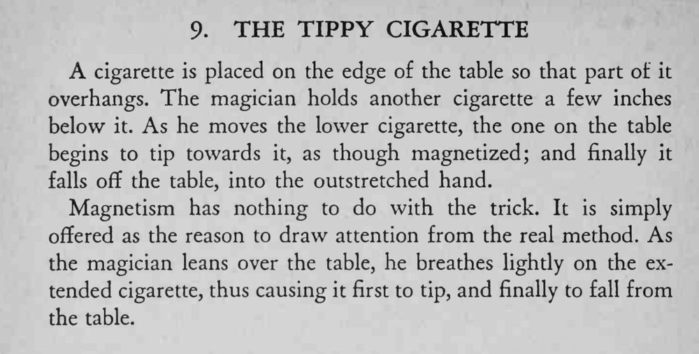

一支烟架在桌沿上，魔术师拿另一支在下方慢慢移动，桌上那支像被磁力吸引般朝它倾斜，最后掉进他手里。
吹气要轻，靠俯身动作掩护；嘴里继续讲磁力的说辞，观众不会注意呼吸。

cigarette is placed on the edge of the table so that part of it overhangs. The magician holds another cigarette a few inches below it. As he moves the lower cigarette, the one on the table begins to tip towards it, as though magnetized; and finally it falls off the table, into the outstretched hand. Magnetism has nothing to do with the trick. It is simply offered as the reason to draw attention from the real method. As the magician leans over the table, he breathes lightly on the extended cigarette, thus causing it first to tip, and finally to fall from the table.